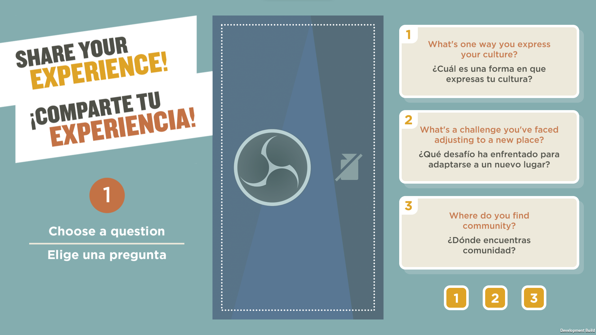
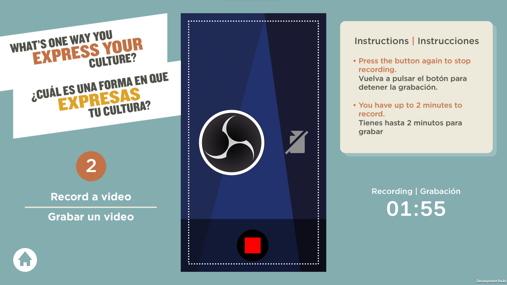
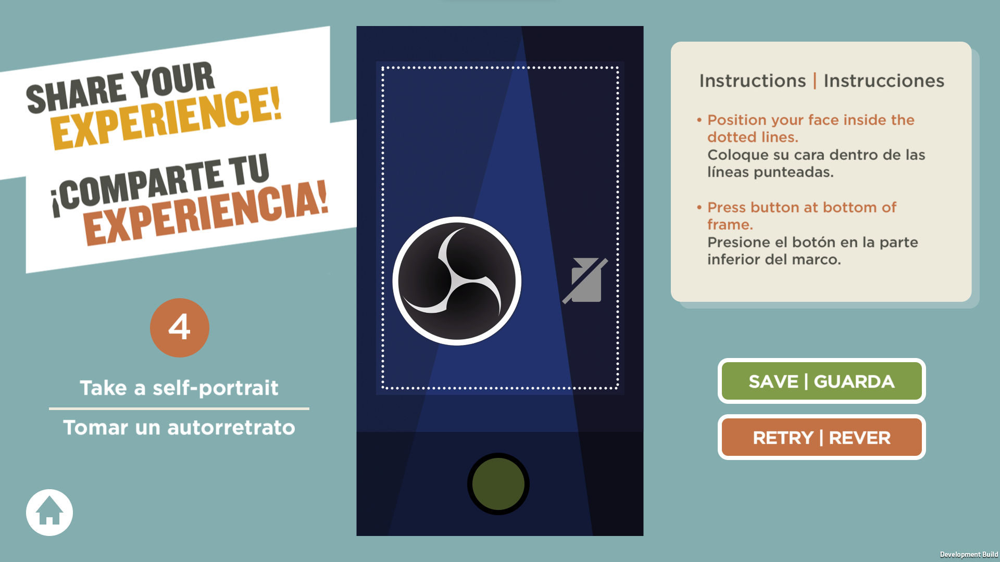

NLP: Lowell "Story Booth"
A video recorder interactive developed for Lowell National Historical Park.
I developed all five interactives and the content management system (CMS) for the project. The "Story Booth" interactive lets users choose a question/prompt to
give their answer/take/story about in a video 2 minutes long or less. They take a self portait, and then the saved videos and portraits can be uploaded onto the CMS
for viewing on the "My Experience Station" interactive.
This interactive required compatibility with a navigation keypad + headset for non-sighted users, along with audio description of the interactive.
This interactive can be used in its entirety with the NavPad and audio description, and supports audio description in both English and Spanish.

